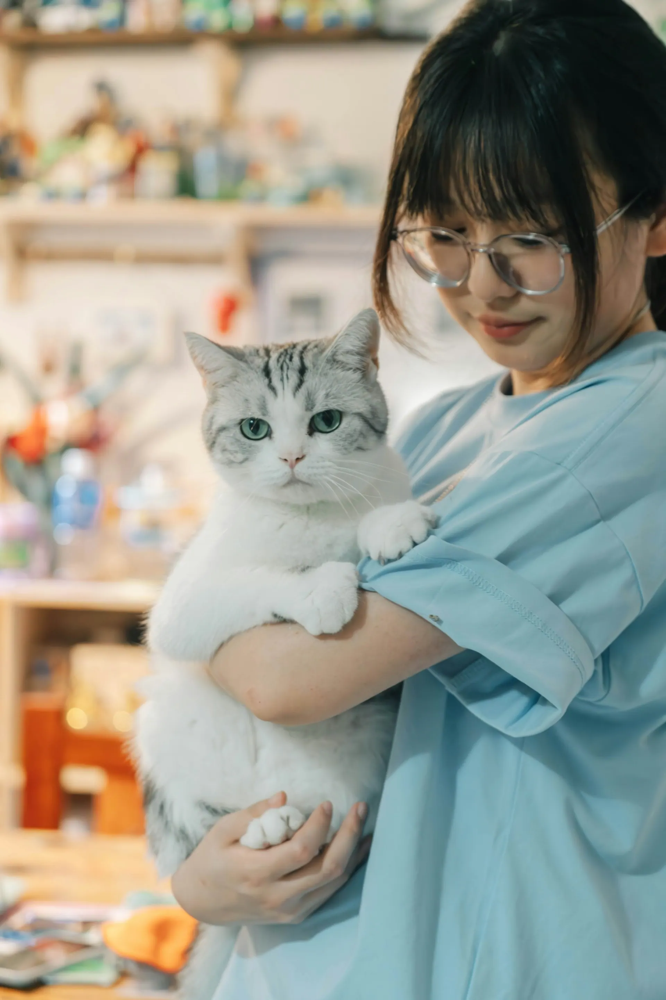
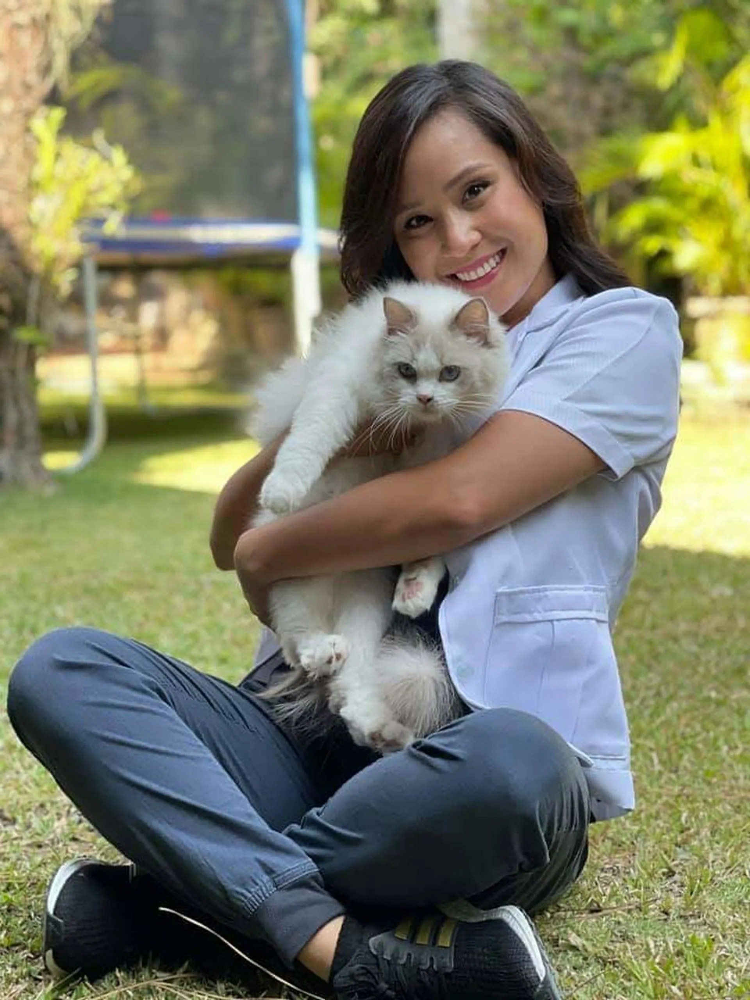
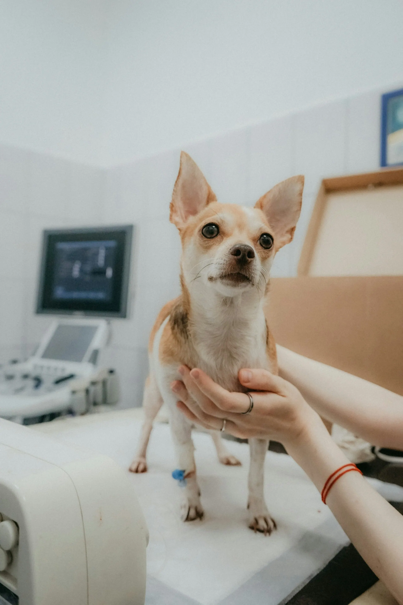
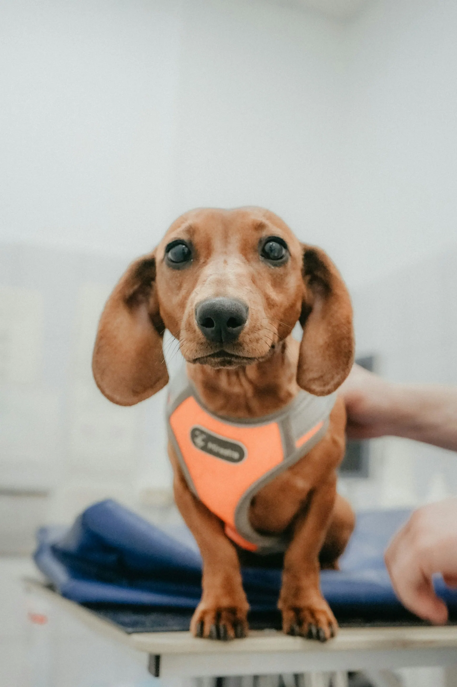

Ветеринарная клиника, Красноярск
Кошка боится переноски? Мы это учитываем
Ветеринарная клиника на Взлётке: терапия, прививки, УЗИ, анализы и хирургия. Отдельные вход и зал ожидания для кошек, приём с 8:00 до 22:00 без выходных.
- Рейтинг
- 4,9
264 отзыва на Яндекс Картах - Адрес
- ул. Весны, 7
Взлётка, отдельный вход для кошек со двора - Часы
- Ежедневно 8:00–22:00

Питомцу плохо прямо сейчас? Позвоните: дежурный врач подскажет, что сделать по дороге, и примет без очереди.
+7 900 000-00-00Услуги и цены
Цена приёма включает осмотр и рекомендации. Анализы и процедуры — по прайсу, врач называет сумму до начала.
Для этого питомца — по записи, позвоните нам.
Врачи
- Анна Морозоватерапевт
Первичный приём, прививки, хронические болезни.
- Павел Ильинхирург
Стерилизация, кастрация, операции мягких тканей.
- Мария Ковалёвакролики, грызуны и птицы
Лечит тех, кого не берут в других клиниках.
- Ирина ЛаптеваУЗИ и кардиология
УЗИ брюшной полости и сердца, ЭКГ.
Почему питомцы у нас спокойнее
Кошки и собаки — раздельно
Два входа и два зала ожидания. Кошка не видит собак, собака не нервничает из-за кошек.
Цена — до процедуры
Врач называет сумму до начала. Если нужно что-то ещё, сначала спросит вас.
Без выходных до 22:00
Можно прийти после работы. Если питомцу плохо, позвоните — примем без очереди.
Карта питомца в телефоне
Прививки, анализы и назначения хранятся в приложении. Перед следующей прививкой придёт напоминание.
Как проходит приём
- Запись онлайн
Выберите врача и время — ждать в коридоре не придётся.
- Отдельный вход
Кошки заходят со двора и ждут в тихом зале, где не лают собаки.
- Осмотр при вас
Врач объясняет каждое действие и называет цену до процедуры.
- Назначения в телефоне
План лечения и напоминания о прививках приходят в приложение.
Клиника



Отзывы хозяев
4,9 из 5 — 264 отзыва на Яндекс Картах
Кошка у нас пугливая, в старой клинике шипела на всех. Здесь отдельный вход и тишина — впервые обошлось без царапин.
Привёз таксу вечером с отравлением, позвонил с дороги. Приняли сразу, врач всё объяснил и назвал цену до капельницы.
Нашли врача для кролика — редкость. Мария подрезала зубы за пятнадцать минут, кролик даже не испугался.
Частые вопросы
Нужна ли запись?
Лучше записаться онлайн — тогда не придётся ждать. Если питомцу плохо, звоните: примем без очереди.
Как подготовить кошку к визиту?
Положите в переноску знакомую пелёнку и накройте её тканью. Заходите через вход для кошек со двора.
Лечите ли кроликов и птиц?
Да. Мария Ковалёва принимает кроликов, грызунов и птиц.
Можно ли оплатить картой?
Да, картой, переводом или наличными. Чек приходит на телефон.
Как нас найти
- Адрес
- ул. Весны, 7, КрасноярскВзлётка, отдельный вход для кошек со двора
- Часы работы
- Ежедневно 8:00–22:00
- Телефон
- +7 900 000-00-00
ул. Весны, 7, Красноярск